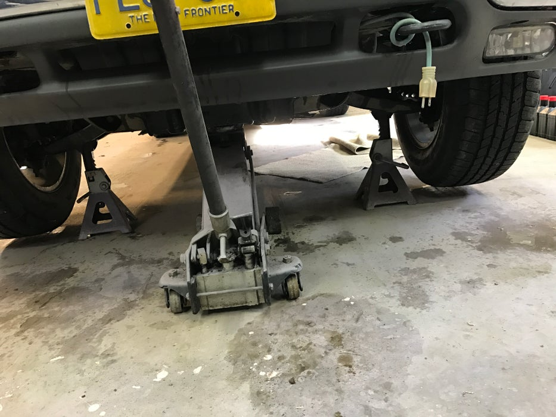
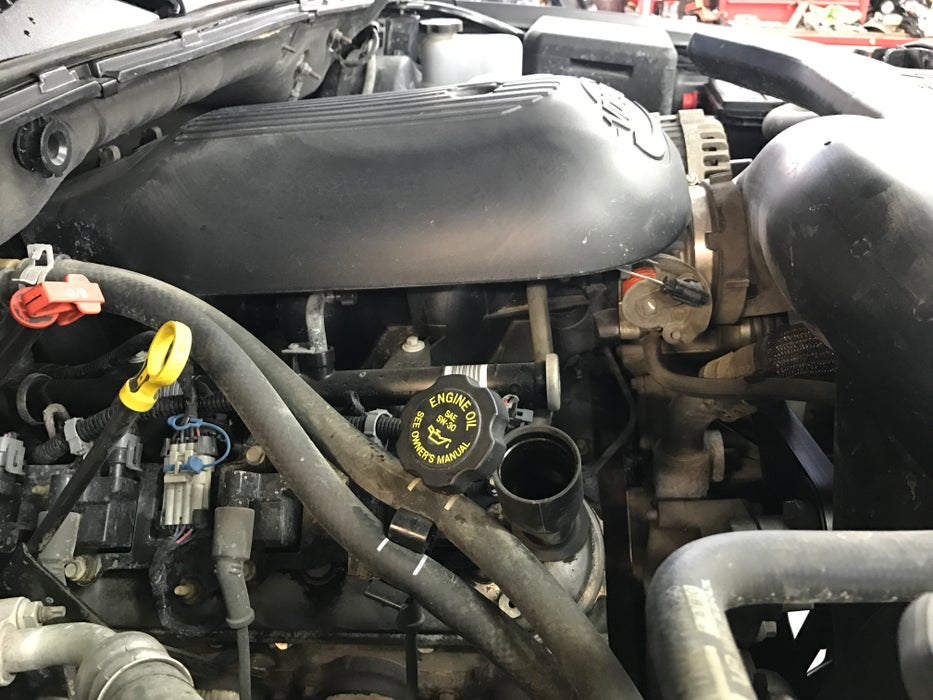
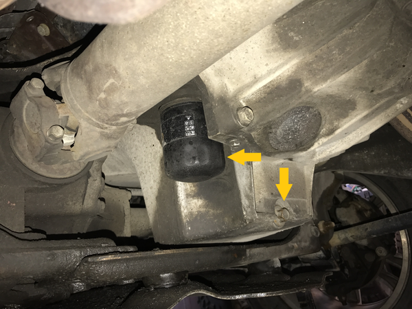
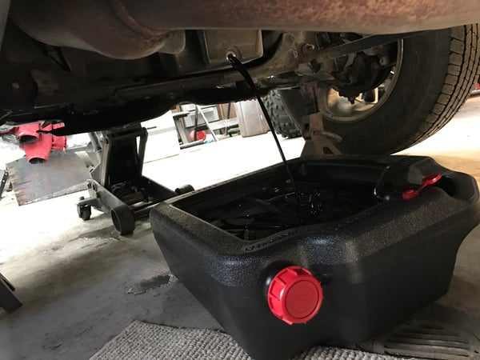
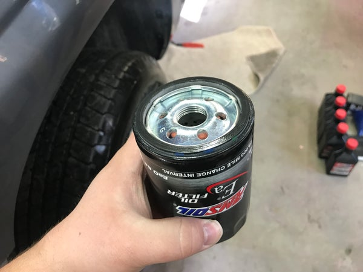
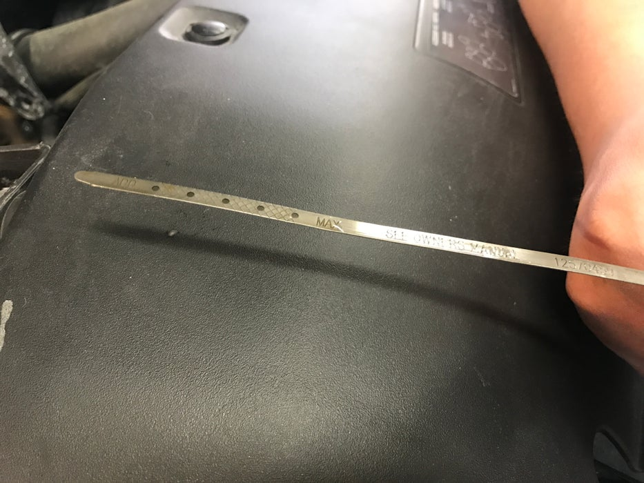
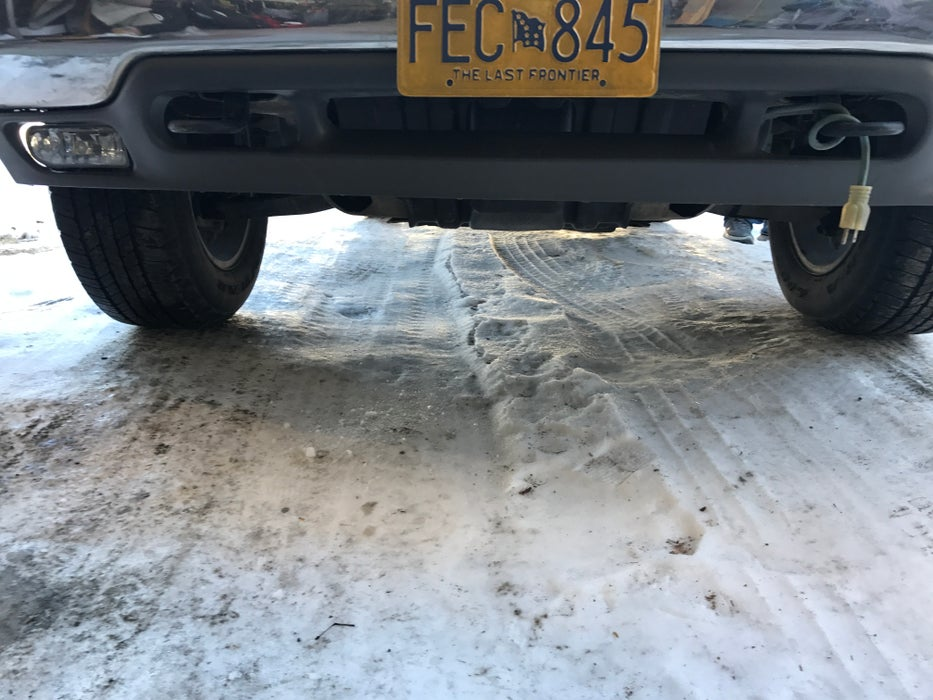

Why should people get their car oil changed?
As many thousands of miles that you put on your car the oil in your car starts to lose it's main purpose. It is to lubricate and prevent the car from seizing up. Oil lubicrates all of the internal moving parts within the engine and along with lubricating it keeps the engine cool to a point where the moving parts wont seize up. As time goes by the oil starts to degrade and wont be able to do what it is supposed to do anymore and as a result of no oil changes your car will die and that will cost you a hefty amount of dollar bills. So take the time now to prevent engine failures by changing the oil at regular intervals.
Why should people change car oil themselves?
People should change car oil themselves because it is usually cheaper, peace of mind that it is done correctly, and just to learn a new skill. The only downside is that it may take 30 minutes to an hour of your time depending on the difficulty of how tight an oil filter is and the position of an oil filter. With this mini topic that I chose anyone can change their car oil themselves. Caution: If you're not confident in yourself please take your car to a professional.
"DISCLAIMER: Read all instructions prior to beginning procedure and follow each step in order. The vehicles exhaust, as well as the other components under the vehicle, and the engine oil may be hot. Always use caution when performing an oil change."
Tools & Supplies Needed
These are the several tools that you would need in order to do an oil change.
Tools
- Sockets
- Wrenches
- Oil Filter Wrench
- Jack
- Jack Stands
- Oil Drain Pan
- Owners Manual
Supplies
- Oil Filter
- Oil
- Brake Cleaner
- Kitty Litter
Steps of Changing Your Oil
- Find the jack points and jack your car up
- Put the jack stands under the vehicles jacking points
 - Open the hood and remove the oil cap
 - Locate the oil drain plug and put the oil drain pan under then remove the plug with the correct socket or wrench
 - Once oil is all drained, replace the drain plug
- Locate the oil filter and position the drain pan under the oil filter and remove it
Tip: If oil filter is stuck use an oil filter wrench to get it off.
 - Get the new oil filter and fill it halfway up with new oil
 - Replace the oil filter with the new one
- Make sure that the oil filter and oil drain plug are tight
- Jack up the car a tiny bit to remove the jack stands then lower the car
- Within the owners manual you can locate how much oil is needed and pour it into the where the engine oil cap was
- Replace the engine oil cap and check the oil dip stick that the oil is between the two max/min holes/line
Tip: If oil is not between the two lines add oil and repeat if necessary. If oil is over the max line/dot by more than an inch, drain and refill the oil.
 - Start your car for 5 minutes then turn it off and check the oil again
Tip: During this time check if the car is leaking oil anywhere from the bottom. If you do have a leakage the plug or the filter might not be on tight enough. If oil is spilt on the ground kitty litter can be used to soak up the oil. Use brake cleaner to wipe any oily surfaces away.
"Start vehicle, check for oil pressure and let run for a few minutes. Check under vehicle for leaks. Shutoff vehicle and check oil level again. Record oil change. Follow the instructions for your vehicle for resetting the oil change light if this feature is installed on your vehicle."
SOURCES
I do not own any of these blockquotes or pictures as they are from this site.